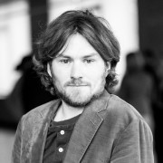

I straddle the lines between project management, software development and research. Over the last 15+ years I've worked on many software projects in Germany, the UK and the USA, both as the developer and the manager. For much of that time my work has focused on environment and transportation. At this stage in my career, I am looking for opportunities in the mobility space to put the technologies we have to best use on our way to a net-zero CO2 emissions planet.
Professional Experience
- 4/2016-present
-
Hawa Dawa GmbH
4/2016-12/2016 as an Impact Hub/Eight Billion Lives fellow, 10/2016-3/2017 as a Climate-KIC stipend holder and from 11/2017 onwards an employee of the resulting company, Hawa Dawa UG/GmbH, cofounded with 4 cofounders. I led the development of the software platform which gradually evolved into the role of Chief Technology Officer.
- Manage a software and hardware team of eight people
- Manage platform and project requirements and the delivery of these together with product requirements using a SCRUM methodology
- Manage technical delivery of longer, key projects including sensor networks and data platforms for Munich, Bern and Mainz
- Provide expertise and facilitate collaborations in mobility centric projects including those in Mainz and with partners such as Siemens Mobility
- Developing infrastructure and software for the collection and model-based visualization of air quality data from company developed hardware and many other data sources
- 1/2015-12/2015
-
Technical Director and co-founder of the resulting company
- Development of a flexible platform for data processing and visualization for the mobility industry
- 4/2013-2/2018
-
Freelance Software Developer
- 3/2009-6/2014
-
Chair of Traffic Engineering and Control, Technische Universität München
Research Assistant
- Responsible for partner contribution to an EU FP7 project (SOCIONICAL - exploring the interfaces between human behavior and technology that influences that behavior in the realm of traffic and crowd management)
- Teaching and student thesis supervision
- 7/2004-10/2008
-
Visiting Scholar/Research Scholar during two stays linked to higher education (see below) and summer employment.
Higher Education
- 10/2007-7/2009
-
MSc in Electronics by Research, University of York, UK
Thesis: Development of a System to study Glare Sensitivity in a Driving Simulator
- 10/2002-7/2007
-
MEng in Electronics with Media Technology and a Year in Industry, University of York, UK
Thesis: StroMoHab - Environment and Task Creation
- My year in industry was spent carrying out research with Eli Peli at the Schepens Eye Research Institute focused on developing software to adjust MPEG video decoding for the visually impaired
- My thesis focused on video preparation and processing together with a software system for a post-stroke rehabilitation system
Skills and other activities
- Languages
-
English (native), German (fluent), French
- Activism and community contributions
- IT skills
- Languages: Python, JS/node.js + limited experience in Java, Scala & C/C++
- Frontend: React.js, jQuery
- Mobile: Cordova
- DevOps/Cloud: Docker, Kubernetes, AWS, IBM Softlayer and Google Cloud
- Data: Postgresql, MongoDB
- Other: Open- & MS Office, Adobe Suite, Final Cut Pro